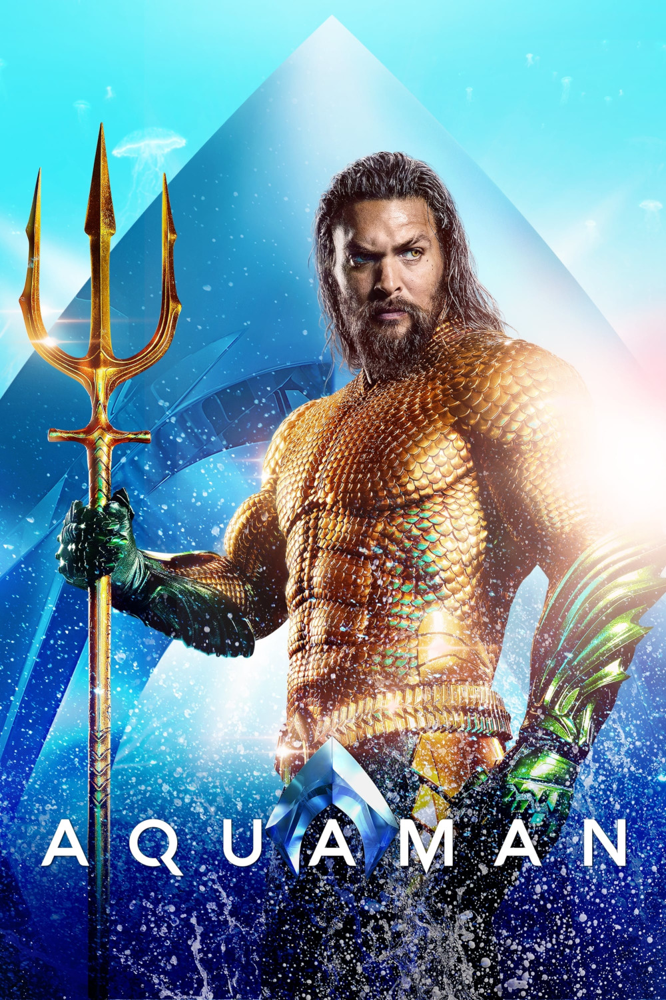

Мировая премьера: 21 декабря 2018
Слоган: Океан зовёт.
Сюжет: Действие фильма разворачивается в необъятном и захватывающем подводном мире семи морей и повествует о появлении и жизни Артура Карри – получеловека-полуатланта. Артуру предстоит отправиться в опасное путешествие, бросить вызов самому себе и узнать, достоин ли он стать тем, кем был рождён... царём.
Режиссёр: Джеймс Ван
В основе: Комиксы об Аквамене (США, выходят с 1941, авторы – Морт Вайзингер и Пол Норрис)
Серия: Расширенная вселенная DC
В ролях:
| Джейсон Момоа | Артур Карри / Аквамен |
| Эмбер Хёрд | Царевна Мера |
| Патрик Уилсон | Царь Орм Мариус / Повелитель Океана |
| Уиллем Дефо | Нуйдис Вулко |
| Николь Кидман | Царица Атланна |
| Яхья Абдул-Матин II | Дэвид Кейн / Чёрная Манта |
| Дольф Лундгрен | Царь Нерей |
| Темуэра Моррисон | Том Карри |
| Луди Линь | Капитан Мёрк |
| Майкл Бич | Джесси Кейн |
| Рэндолл Парк | Доктор Стивен Шин |
| Грэм МакТавиш | Царь Атлан |
Бюджет: $ 160 млн.
Кассовые сборы в США: $ 335 млн.
Кассовые сборы в мире: $ 1 152 млн.
Продолжительность: 2 ч. 12 мин.
Рейтинг: 6.8